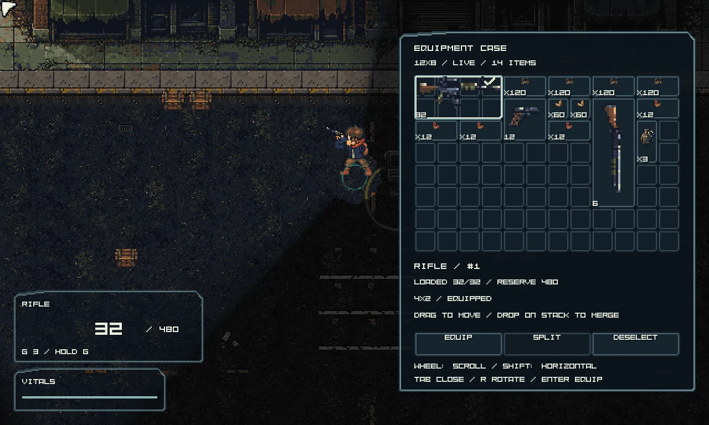
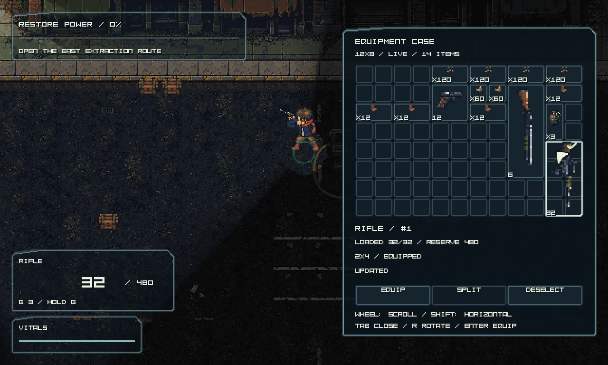
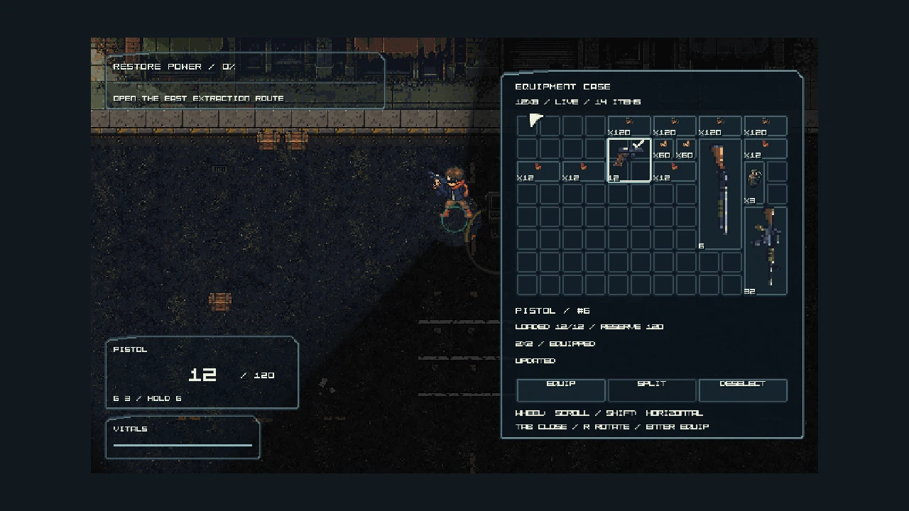
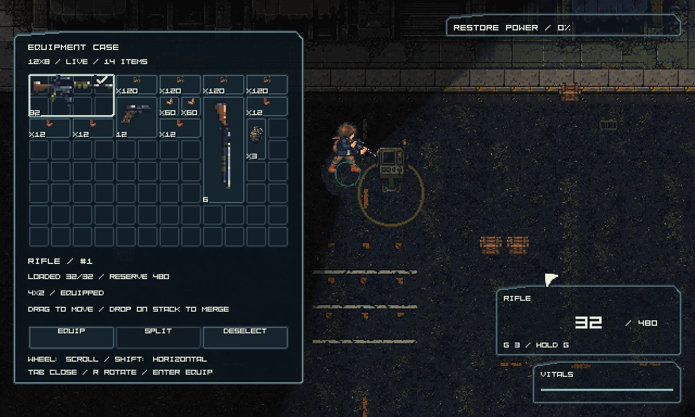

Actual packaged executable captures, using the delivered tactical PNG skin and authoritative inventory. Battle continues while the case is open.
Launch candidate/play.cmd. Tab: case; drag: move; R: rotate; Enter: equip; X: split; wheel over Split: exact quantity; drop onto stack: merge; Escape: close. Wheel over the grid scrolls; Shift scrolls columns.
Stable technical report · Native checks · Revision and hashes




This runtime slice covers owned equipment, ammunition, arrangement and equip. World pickup/drop, folded-sentry transfer, paid upgrades, saves and LAN remain later handoffs. Native automation and author image review do not establish independent art or human playtest acceptance.